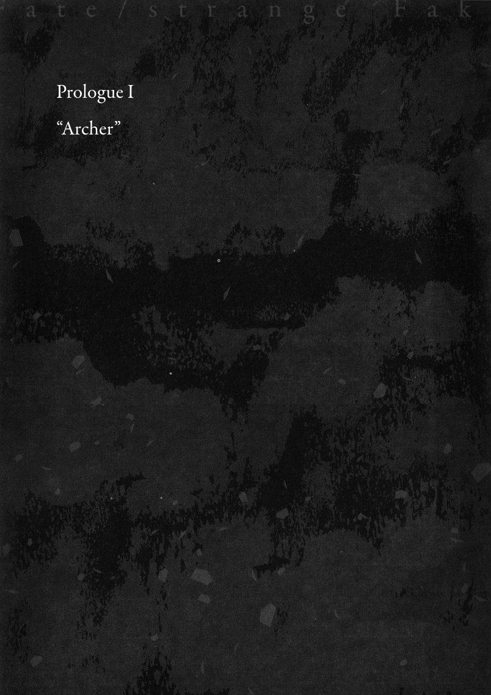
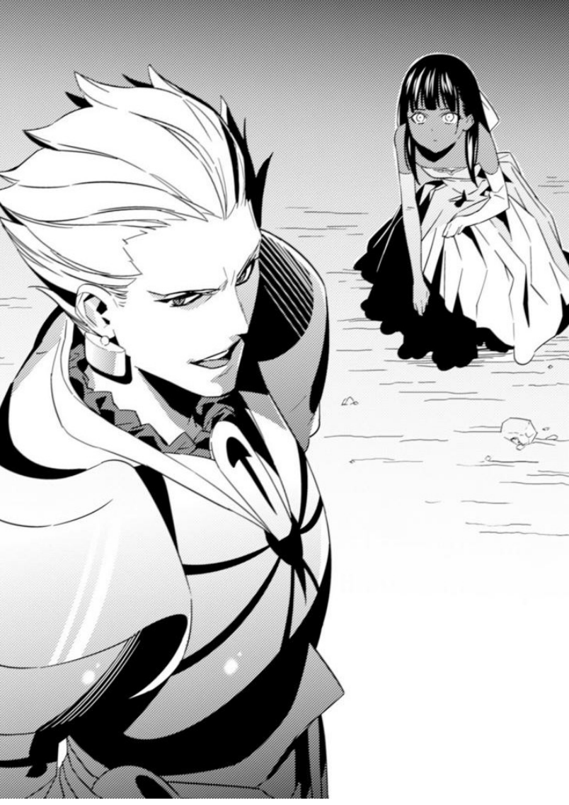

Ele era verdadeiramente um mago, em todos os sentidos. E, ao mesmo tempo, havia estagnado, também em todos os sentidos. A Guerra do Santo Graal Falsa. Ele sabia que se tratava de uma imitação do ritual outrora realizado numa ilha do Extremo Oriente. Isso não o incomodava.
Não importa. Talvez seja uma fraude ou uma falsificação; ainda assim, isso não faz diferença. Contanto que produza o mesmo resultado que o original, já basta.
Nenhum mago orgulhoso dependeria do fruto do trabalho alheio. Um mago assim escolheria construir um sistema próprio, assim como as três famílias fundadoras criaram a Guerra do Santo Graal. Ele, porém, não hesitava em seguir as pegadas dos outros. Liderar ou seguir, em certo sentido, ambas eram opções razoáveis.
Desde o começo daquela mera imitação da Guerra do Santo Graal, não havia ninguém tão determinado quanto ele em todos os aspectos; ninguém tão entusiasmado quanto ele.
Desde o início, ele estava preparado para qualquer coisa que pudesse acontecer quando veio a Snowfield.
Quando ouviu os rumores pela primeira vez, riu deles como mera fofoca. Então, um relatório emitido por Rohngall abalou a Associação. A notícia se espalhou de mago em mago até chegar a ele.
Vinha de uma família de reputação nada insignificante entre os magos, mas o poder de sua linhagem estava em declínio. Como chefe da família, ele sofria pressão.
Ao longo dos anos, formulara sua cota de teorias mágicas. Era um homem inteligente. Conhecia várias técnicas. Tudo o que lhe faltava era poder bruto, do tipo que deveria ter sido acumulado ao longo de muitas gerações. Isso o levava a uma frustração cada vez maior.
O mais comum, nessa situação, seria passar muitos anos pesquisando formas de aumentar o poder da família e então transmitir esse conhecimento, junto com o Brasão Mágico, a um descendente suficientemente capaz.
Mas ele tinha pressa. Seu filho era ainda menos capaz em magia do que ele próprio. Havia muitas famílias cuja aptidão mágica enfraquecia cada vez mais com o tempo, até perderem completamente o vínculo com o mundo da magia.
Isso não tinha a menor graça.
Não permitirei que eu acabe como os Makiri. Como qualquer organização ou corporação, a Associação estava cheia de obstáculos. Só um mago de linhagem poderosa podia chegar ao ponto de possuir um método de produzir sucessores poderosos e prósperos.
Era um beco sem saída. Ele era um mago em todos os sentidos e, ainda assim, não bastava. Apostou tudo naquela talvez-falsa Guerra do Santo Graal, veio a Snowfield e colocou todas as fichas na mesa.
Todos os seus bens, todo o seu passado e até mesmo o seu futuro. Não tenho nada a temer. Tudo vai correr bem. Como prova de sua determinação, exterminou o próprio filho. Seu filho, que não tinha futuro. Fez o mesmo com a esposa, que tentou impedi-lo. Não sentia nada por ela, uma mulher incapaz de lhe dar descendentes vigorosos. Ainda assim, achava chocante que ela não entendesse absolutamente nada do que significava ter amor-próprio como mago.
Devia ter sido culpa dela o fato de seu filho ser inadequado. Infelizmente, ela fora a melhor mulher que ele conseguira obter com sua posição atual. Para subir no mundo, precisava vencer aquela guerra. Mesmo que aquele Graal fosse falsificado, o simples ato de vencer uma chamada Guerra do Santo Graal já bastaria para elevar sua posição como mago. Talvez até encontrasse um caminho para a Raiz ao vencer aquela guerra.
Ou talvez pudesse descobrir os segredos dos Makiri e dos Einzbern. Fosse como fosse, ao fim da guerra estaria em situação melhor. Que aposta esplêndida. No mínimo, colheria uma recompensa mais valiosa do que tudo o que arriscara ao entrar na guerra.
Pensou em todas as formas possíveis de se beneficiar daquela guerra, mas nem uma única vez considerou a possibilidade da derrota e do consequente fim de sua linhagem.
Havia um bom motivo para não considerar essa possibilidade. Ele tinha uma chance concreta de vencer. Ou, pelo menos, uma chance boa o bastante para justificar ter se livrado do próprio filho. Então... estes são os Selos de Comando, imagino? Eles eram um pouco diferentes do que ele esperava. Ainda assim, fitou a mão direita com um sorriso amoroso no rosto, como se contemplasse o próprio filho recém-nascido.
Os selos assumiam a forma de um elo de corrente e serviam como prova de que ele fora escolhido como
um Mestre naquela Guerra do Santo Graal.
Mas, se isso apareceu... então o Graal me reconheceu! A mim! Como Mestre! Como aquele que controlará esse Espírito Heroico! Enquanto falava, o homem lançou um olhar para o embrulho de pano ao lado... e então começou a rir.
Ele riu. Riu. Riu. Ao norte de Snowfield havia um grande desfiladeiro. Na cadeia montanhosa próxima às falésias avermelhadas, havia um sistema de cavernas. Embora originalmente formadas por processos naturais, elas agora serviam de ateliê para o mago. Ele estabelecera um Campo Limitado para impedir a aproximação de terceiros.
Uma lâmpada iluminava o espaço ao redor do mago. Ele pegou o embrulho e, com extremo cuidado e reverência, retirou de dentro um objeto.
Aquilo... era uma chave. No entanto, descrevê-la como uma mera chave seria inadequado. Era excessivamente ornamentada e tinha aproximadamente o comprimento e o peso de uma pequena faca de sobrevivência. Pareceu-lhe que as joias que a adornavam eram extremamente valiosas, tanto em termos mágicos quanto monetários.
Ouvi dizer que, numa Guerra do Santo Graal anterior, algo foi invocado usando uma cobra fossilizada... E, usando esta relíquia, não há dúvida de que invocarei aquilo. Houve um tempo em que, quando sua família ainda era poderosa, um de seus ancestrais apostou tudo, assim como ele acabara de fazer, para obter aquela chave.
O que seu ancestral buscava era o tesouro da cidade dourada, que supostamente abrigava tudo o que existe no mundo. Aquela chave era o dispositivo que abriria os portões nas profundezas daquela cidade lendária.
Ele não tinha interesse em riqueza material. Mas um tesouro que guardava todo e qualquer artefato mágico possível era algo que não podia ignorar.
No fim das contas, aquele ancestral conseguira verificar que a chave era genuína, mas não avançara além disso. Jamais encontrou o tesouro em si. A chave estava impregnada com algum tipo de energia mágica de origem desconhecida, mas isso já não importava para o mago naquele ponto.
Era uma relíquia pertencente ao Espírito Heroico que ele desejava. Aquela chave serviria como um catalisador supremo, praticamente garantindo que ele obteria o Servo que queria. Chegou a hora.
Vamos começar. O mago se levantou... e seu sorriso desapareceu abruptamente. Deixou de lado as emoções e os desejos egoístas, concentrando toda a atenção na cerimônia que estava prestes a conduzir.
Unificou todos os sentidos, focando-os em um ponto e isolando os que não eram necessários.
Seus nervos, seus vasos sanguíneos e os invisíveis Circuitos Mágicos que percorriam seu corpo. Sentiu um líquido quente correr por aquelas vias e... O mago recitou a invocação de evocação, ao mesmo tempo uma congratulação a si mesmo e uma maldição contra o universo.
Alguns minutos depois. Ele perdeu a vida e tudo o que sacrificara por aquela guerra. A linhagem de magos à qual pertencia chegou ao fim. Tudo aconteceu num piscar de olhos. Um mero instante. Depois de uma luta de poucos segundos, encontrou o fim assim, sem mais nem menos.
"Consegui... Ha ha, ha ha ha ha ha! Eu consegui!" Quando viu aquilo aparecer diante dele, o mago não conseguiu ficar calado. Não havia necessidade de confirmar o Nome Verdadeiro daquela existência. Desde o princípio, ele sabia o que invocaria. Por poucos segundos, apenas ficou ali parado, ignorando o Espírito Heroico.
O semblante do Espírito Heroico estava tingido de um desagrado claro e evidente. Ainda assim, cumpriu seu dever como Espírito Heroico. É claro, não havia como saber se ele de fato pensava nisso como um "dever".
"...Responda-me. É você o insolente mago que ousa fazer um pedido a um rei em todo o seu esplendor?"
Tinha cabelos dourados e armadura dourada. Como Servo, sua própria definição era a magnificência sem igual. A pergunta que dirigiu ao mago vinha carregada de desprezo.
O mago se sentiu ofendido ao ouvir aquela pergunta. Embora percebesse o poder esmagador daquela existência diante de si, também sentiu uma pontada de raiva.
Como ousa um mero Servo ser tão insolente! Seu orgulho como mago venceu o temor. Porém, uma dor nos Selos de Comando de sua mão direita o trouxe de volta à beira da fúria.
...Tudo bem. Dada a personalidade desse herói, isso já era de se esperar. Logo de início, ele teria de deixar claro como seria a relação entre eles.
Naquela guerra, quem daria as ordens seria ele. O Espírito Heroico que invocara como Servo não passava de uma ferramenta sua.
Sim. É isso mesmo. Eu sou o seu mestre. Preparou-se para concluir a resposta à pergunta do Servo, estendendo a mão direita para exibir os Selos de Comando... e então percebeu que sua mão direita havia desaparecido.
"...Hã? O quê?" Ficou sem palavras. Seus balbucios ecoaram por toda a caverna. Embora nem uma gota de sangue tivesse escorrido de seu corpo, sua mão direita havia sumido. Em pânico, ergueu o pulso até o rosto. O cheiro cortante de carne queimada encheu suas narinas.
Fios finos de fumaça subiam do coto de seu pulso. Era óbvio que sua mão havia sido decepada por algum tipo de chama.
No momento em que tomou plena consciência daquilo, uma onda de dor atravessou seu sistema nervoso e... "HiAAgAA-giAAAiigaAAAAAaAAAAAaaA!AAaaaAAAAAaaaaaaaa!" Um grito... um grito... um grito avassalador.
Ele guinchou com todas as forças, soando como algum tipo de inseto enorme. Ao notar isso, o Espírito Heroico disse, entediado: "Então você é um bobo da corte, seu verme? Nesse caso, divirta-me com gritos mais elegantes. Isso não basta."
O Servo não arqueou nem mesmo uma sobrancelha, tão arrogante como sempre. Ao que tudo indicava, ele não era o responsável pelo desaparecimento da mão direita do mago.
"HiaAAA, AAaa, hiiAAAaaAAAaa!" Diante daquele acontecimento incompreensível, o mago estava prestes a perder o controle de si mesmo... mas, como mago, não podia permitir isso. Forçou-se a se acalmar e rapidamente se recompôs.
Há alguém... dentro do Campo Limitado! Como pude permitir isso? Que descuido imperdoável! Em circunstâncias normais, ele teria percebido qualquer intruso no momento em que entrasse naquelas cavernas, já que havia transformado o lugar em seu ateliê. O intruso devia ter conseguido se infiltrar sem ser notado enquanto as cavernas transbordavam da energia mágica do Espírito Heroico.
Ainda assim, havia outras armadilhas instaladas para dar suporte ao Campo Limitado. Nenhuma delas fora ativada. Se o intruso conseguira desarmar todas as armadilhas do caminho, então o mago precisava agir com extrema cautela ao lidar com ele. Isso era evidente.
Enquanto reconstruía magicamente o que restava de sua mão direita, virou-se na direção da
presença que agora sentia, rumo ao túnel que levava para fora da caverna, e bradou: "Quem é você?! Como passou pelo meu Campo Limitado?!"
E então... a resposta veio de imediato, ecoando da escuridão da caverna. No entanto, a resposta não foi dirigida ao mago, mas sim ao Servo dourado: "Ó grande rei, esta humilde serva pede permissão para se apresentar diante de Vós."
O Servo pensou por um segundo e então respondeu, altivamente: "Muito bem. Concedo-lhe permissão para testemunhar minha glória." "Sou profundamente grata por esse privilégio, Vossa Majestade." A voz dela era límpida, quase imaculada. Desprovida de emoção, como se rejeitasse tudo o que existia.
Ela emergiu da sombra de uma pedra... e, embora só pela voz já se pudesse supor que fosse jovem, era ainda mais nova do que a voz sugeria, talvez uns doze anos. Sua pele era castanho-escura, e o cabelo, de um negro lustroso.
Vestida com a elegante beleza de suas roupas cerimoniais, composta em todos os aspectos, parecia uma criança de nobre criação. Embora seu rosto fosse belíssimo, realçado ainda mais pelo traje, a expressão que trazia era um pouco menos radiante.
Ela deu um passo humilde para dentro do ateliê e curvou-se profundamente diante do altar sobre o qual o Espírito Heroico se erguia. Depois, sem se importar com a sujeira no chão, caiu de joelhos.
"O que..." O mago engoliu um grito de raiva. Incapaz sequer de avaliar a força da garota, não podia agir impulsivamente. Enquanto isso, a garota ignorou completamente sua presença.
O Espírito Heroico não pareceu surpreso com a postura deferente dela. Olhou para baixo e falou, com um grande poder por trás de cada palavra. "Fez bem em não derramar o sangue de um vira-lata diante de mim. Contudo, o ar agora está impregnado de um fedor desagradável de carne. Se deseja me dar uma explicação por essa irreverência, faça-o agora."
A garota lançou um rápido olhar ao mago. "Peço perdão, Vossa Majestade. Julguei apropriado aplicar retribuição àquele ladrão por ter roubado a chave do Vosso tesouro, pois ele não era digno de enfrentar a justiça por Vossas mãos", respondeu ela, ainda ajoelhada.
Enquanto falava, trouxe à frente um pedaço de carne humana. Era, sem dúvida, parte do corpo do mago e estava magicamente ligado ao Espírito Heroico graças aos Selos de Comando inscritos nele. Em outras palavras, era a mão direita do mago.
O Espírito Heroico dourado assentiu diante da resposta da garota. Baixou os olhos para a chave, depositada num pedestal a seus pés. Pegou-a... e então a arremessou para longe, sem o menor interesse.
"Essa chave é uma ninharia. Não existe homem algum em todo o meu jardim que ousasse pôr as mãos em meus tesouros. Embora eu tenha ordenado que essa chave fosse criada, eu não precisava dela e, por isso, me desfiz dela."
"...?!" O mago estava recitando um encantamento para amortecer a dor no pulso direito. Quando ouviu a declaração do Espírito Heroico, ficou chocado.
Um de seus ancestrais apostara tudo na esperança de alcançar a chave daquele tesouro. Aquele artefato, o único orgulho de sua família, fora jogado fora como lixo. E isso por seu Servo, um ser que deveria ser seu escravo, sua ferramenta.
Tomado pela fúria, a dor no braço direito pareceu se distanciar, mesmo enquanto ele interrompia o encantamento.
No entanto, como se quisesse desferir um golpe fatal no mago, a garota de pele morena se voltou para ele e falou com uma voz ameaçadora: "Se Sua Majestade assim deseja, não continuarei lutando contra você. Peço que vá embora agora." Sua voz transbordava de peso.
"Quê..." "Se fizer isso, eu não precisarei matá-lo." "...... ............." O mago perdeu o controle de si mesmo. A fúria que brotara dentro dele tomou seus Circuitos Mágicos. Ele não tinha mais capacidade sequer para falar. Histericamente, liberou toda a energia mágica armazenada na mão esquerda.
Concentrou nela toda a sua magia, sua loucura e seu poder, transformando tudo numa esfera de luz negra, que lançou contra a garota com toda a força. Ela disparou rasgando o espaço, pronta para engoli-la inteira... avançou; irrompeu; correu.
A garota deveria ter sido destruída por sua explosão de energia mágica antes mesmo de conseguir respirar outra vez.
Mas isso não aconteceu. "( )" Um cântico silencioso. À medida que os lábios dela se moviam, magia começou a ganhar forma ao redor. Quase de imediato, uma energia mágica imensa irrompeu entre ela e o mago. Era como um feitiço comprimido a tal ponto que se tornara inaudível... um encantamento de poder esmagador.
E, no fim... o mago viu. Uma enorme mandíbula flamejante, talvez duas vezes mais alta que ele, apareceu diante dela, engoliu a energia mágica que ele liberara e então...
... Isso não pode ser. Esse foi o último pensamento que ele teve.
No fim, o que exatamente não podia ser? Ele sequer teve tempo para contemplar isso. ... N-não pode... i-i-isso não... isso... n-não pode... Como mago, ele gostaria de pensar que, mesmo morrendo, sua linhagem sobreviveria... mas então se lembrou de que, poucos dias antes, matara com as próprias mãos o sucessor que poderia continuar a família.
... Não pode ser! Não pode! Eu... eu vou... morrer? Aqui? Isso n-não pode.... ... Não pode não pode nã...
E então o mago desapareceu. Perdeu a vida e tudo o que sacrificara por aquela guerra. A linhagem de magos à qual pertencia chegou ao fim. Tudo aconteceu num piscar de olhos. Um mero instante. Após uma luta de meros segundos, ele foi engolido por aquelas chamas. Encontrou o fim, assim, sem mais nem menos.
"Peço perdão por tê-Lo submetido a uma visão tão deselegante, Vossa Majestade." Ela acabara de matar um homem, mas não estava abalada. Baixou a cabeça diante do Espírito Heroico.
O Servo dourado olhou para ela como se dissesse que aquilo não lhe importava. Então, referindo-se à magia que a garota havia usado, disse: "Entendo. Então o seu povo governou esta terra na minha ausência." A magia que ela acabara de usar não se originara nela mesma.
Em vez disso, era provável que tivesse explorado as linhas ley da terra. Ao reconhecer isso, uma emoção perpassou o rosto da garota pela primeira vez. Ainda com a cabeça baixa, respondeu de forma melancólica: "Nós não a governamos. Vivemos em harmonia com ela. ...Como Vossa Majestade deduziu, meu povo não passa de gente comum fora de Snowfield."
"Um vira-lata nunca será nada além de um vira-lata. Os que possuem magia não são diferentes daqueles que não possuem."
Sua arrogância sugeria que, para ele, tudo no mundo, exceto ele próprio, era igual. A garota não respondeu.
Os Selos de Comando que antes estavam na mão direita do mago já haviam migrado para a mão direita dela.
Agora, a Energia Mágica fluía para a existência do Espírito Heroico não mais a partir do mago, mas da garota. Observando aquilo, ele falou com a mesma imponência de sempre... de algum modo entediado, mas ao mesmo tempo infinitamente majestoso. "Muito bem. Mais uma vez, responda-me. É você a insolente maga que ousa
fazer um pedido a um rei em todo o seu esplendor?" O Espírito Heroico dourado.
O maior de todos os Heróis. O homem de quem se dizia ser o rei dos reis... A garota assentiu com firmeza e mais uma vez se curvou profundamente diante dele.
"...Eu não busco o Santo Graal", disse a garota baixinho enquanto saíam da caverna. Ela se apresentou como Tiné Chelc. Como Mestre do Servo dourado, agora era uma participante da Guerra do Santo Graal.
E, ainda assim, fez a declaração contraditória de que não desejava o Santo Graal. Explicando seus verdadeiros objetivos, disse: "Desejamos expulsar os magos que escolheram este lugar como palco de sua Guerra do Santo Graal, e que têm passado por cima desta terra. Isso é tudo o que desejamos, Vossa Majestade."
Ela declarou o desejo de destruir a Guerra do Santo Graal sem o menor peso dramático. O Espírito Heroico dourado... o rei invocado nesta era como Servo da classe Archer... respondeu sem interesse: "Eu também não me importo com o Graal. Se for o verdadeiro Graal, punirei os vermes que roubaram meu tesouro; e, se for um Graal falso, executarei os ingratos que realizaram este ritual."
"Vossas palavras generosas me tranquilizam, Vossa Majestade", agradeceu ela. Continuando, falou de seu povo: "Durante mil anos, minha tribo viveu em harmonia com a terra sobre a qual Snowfield foi construída. Nós até a protegemos contra os tiranos do leste que buscavam dominá-la. Mas então uma seita dentro do governo deles se uniu àqueles malditos magos... e, em meros setenta anos, tomaram tudo." Sua voz estava carregada de uma mistura de raiva e tristeza.
Mas o Espírito Heroico não pareceu se importar. "Que tolice. Não importa qual vira-lata reina sobre esta terra de vira-latas, pois ela faz parte do meu jardim e, no fim, retornará a mim. Em circunstâncias normais, eu não me rebaixaria a intervir numa disputa entre vira-latas... mas, se ousarem pôr as mãos em meus tesouros, aí a história muda."
Como sempre, ele só pensava em si mesmo. E o que a garota achava disso? Não lhe parecia particularmente desagradável, nem propriamente surpreendente. Ele se comportava como rei em todos os momentos e, por isso, ninguém podia contestar sua realeza. Sua indomabilidade despertava nela uma leve pontada de algo parecido com inveja. Ela se recompôs e saiu da caverna. Do lado de fora, talvez uma centena de pessoas vestidas de preto aguardasse sua volta.
A maioria tinha a pele castanha como a dela, mas também havia algumas pessoas brancas e negras entre elas.
Haviam levado uma frota de veículos até a beira do vale e cercado a entrada da caverna. Era evidente que não estavam ali para um dia honesto de trabalho.
Ao avistarem a garota e o homem imponente ao lado dela... todos se ajoelharam em reverência diante da garota e do Espírito Heroico ao mesmo tempo. "Quem são esses vermes?" Tiné também se ajoelhou diante dele antes de responder. "...São apenas os membros da sociedade que busca restaurar nossa tribo e derrotar os magos que desceram sobre a cidade, Vossa Majestade. Sucedi meu pai como representante da sociedade. Por isso, devo lutar nesta guerra."
"Oh?" Muitas pessoas se ajoelhavam diante dele em veneração. Talvez aquilo lhe recordasse como eram as coisas quando ainda estava vivo. Seus olhos se estreitaram levemente ao reconhecê-la, ainda que só um pouco.
"Embora sejam vira-latas, parece que entendem quem é digno de adoração." "Jamais ousaríamos responder ao esplendor de Vossa Majestade com algo que não seja a mais profunda gratidão."
"Então você deseja usar meu poder para seus próprios fins. Ao que parece, preparou-se adequadamente para a batalha que se aproxima."
"......" Ela sabia que deveria se sentir honrada por aquele comentário e, ainda assim, sentiu-se inquieta. O rei estava claramente entediado, e não fazia questão de esconder isso. E então, como se confirmasse as suspeitas dela, o Espírito Heroico falou: "Mas este Graal é, no fim das contas, falso. A ralé que foi atraída para cá não passa de ninharia. Ainda que eu julgue cada um deles, não encontrarei alívio algum para este tédio."
Quando terminou de falar, já havia materializado uma pequena garrafa. Todos os que presenciaram aquela cena recordariam dela com nostalgia depois. E o que era? "Uma distorção no espaço, da qual surgiu uma única garrafa, caindo direto na mão do Espírito Heroico."
Era um recipiente belamente ornamentado, feito de seja-lá-o-que-fosse. Talvez porcelana, talvez cristal; de todo modo, era lustroso e translúcido. Algum tipo de líquido se agitava em seu interior.
"Se esta guerra não passar de uma ninharia para mim, é natural que eu a trate como tal: como uma brincadeira infantil. Não haverá necessidade de usar todo o poder de minhas habilidades. Até que surja um inimigo digno de mim, passarei meu tempo em lazer."
Enquanto as palavras se dissipavam, ele abriu o recipiente e se preparou para virá-lo de uma só vez... quando...
Naquele exato momento. Num timing tão perfeito que só poderia ter sido obra do destino, e não do acaso...
A terra bradou.
【ーーーーº˚____.‾‾‾‾‾•____ーーー˚‾‾‾‾‾‾.____˚‾‾‾_______.】
"!?" Tiné e seus seguidores todos se viraram para o céu. Tinham ouvido um rugido poderoso vindo de muito longe, um som capaz de abalar tanto o céu quanto a terra.
Mas era belo demais para ser chamado de "rugido". Era como se um anjo colossal, ou algo do tipo, ou talvez a própria Terra, estivesse entoando uma canção de ninar.
Podiam dizer que o som viera de muito, muito longe, das florestas a oeste de Snowfield.
Aquele ruído tremendo, capaz de devastar as próprias leis da física, era, por algum motivo, algo em que Tiné depositava fé.
Era como o primeiro choro de um recém-nascido e, ao mesmo tempo... quase com certeza, a voz de um Servo estupendamente poderoso. Archer também ficou imóvel ao ouvir aquela voz. A garrafa que materializara estava junto aos lábios. Estava prestes a beber, mas parou... e foi então que o rei dourado demonstrou uma emoção poderosa pela primeira vez.
Mesmo aqueles que conheciam Archer há algum tempo diriam que era raro vê-lo tão tomado por emoções. Aquele rei entre todos os reis era rápido em se irritar e estava longe de ser sereno... mas pensar que até mesmo ele podia ser levado a esse estado.
"Aquela voz... não me diga?" Seus olhos se acenderam com surpresa, consternação, perplexidade... e então êxtase. "...É você?" Tiné percebeu que a aura esmagadora do Espírito Heroico vacilou por um único instante enquanto ele murmurava aquelas palavras.
Mas, sem a menor hesitação, Archer voltou a exalar arrogância, autoritário como sempre. Caiu numa gargalhada sincera. O som jubiloso de sua voz penetrou o vasto céu, mais alto e mais alto.
E então, depois de rir o bastante... "Ha! Que fortuna! Como devo chamar uma coincidência dessas senão prova da minha realeza?!"
Ele se encheu de vigor e entusiasmo, como se não estivesse entediado poucos instantes antes.
"Regozije-se, garota vira-lata! Parece que terei ocasião de usar toda a extensão de minhas habilidades nesta guerra!"
O Rei dos Heróis estava anormalmente falante, talvez por estar tomado de alegria. "Que prazer seria terminar tudo num duelo naquela praça ao longe... mas, por outro lado, se ele foi invocado como um guerreiro enlouquecido, ou se... Não; não falarei disso. Não é algo que os vira-latas precisem ouvir."
Estava de bom humor, incapaz de conter o riso, régio como sempre. Enquanto olhava na direção de onde viera o rugido, falou com Tiné, que ainda permanecia ajoelhada ao seu lado.
"Olhe para mim, Tiné."
Surpresa por o Espírito Heroico referir-se a ela pelo nome, Tiné ergueu a cabeça para encará-lo.
O rei atirou para ela a garrafa que segurava. "É um elixir da juventude. Imagino que não precise disso na sua idade, mas agora que chegamos a este ponto, eu também não preciso. Seja grata."
"S-sim...? Sim, Vossa Majestade!" Seus olhos se arregalaram em surpresa. Archer a observou por um momento antes de continuar. "Se deseja tornar-se minha súdita, então escute minha ordem", disse ele, majestosamente. Embora quase não lhe desse atenção, Archer estava de ótimo humor enquanto proferia sua ordem régia. "Você não passa de uma criança. Aja como tal. Até aprender os costumes do mundo, basta que contemple meu poder real com júbilo."

Apesar de haver um leve toque de sarcasmo em suas palavras, elas ainda assim tinham força. Ela havia descartado todas as emoções por causa de sua tribo e, ainda assim, diante daquelas palavras, vacilou.
De fato, justamente por ter descartado as emoções, nada lhe restava além de demonstrar o mais profundo respeito por ele. Era incapaz de se alegrar, e por isso baixou a cabeça.
"Tentarei fazer isso, Vossa Majestade", respondeu, em tom apologético. E assim... foi com isso que um Servo e sua Mestre entraram no campo de batalha. Gilgamesh, o Rei dos Heróis, ao lado da garota cuja terra havia sido roubada.